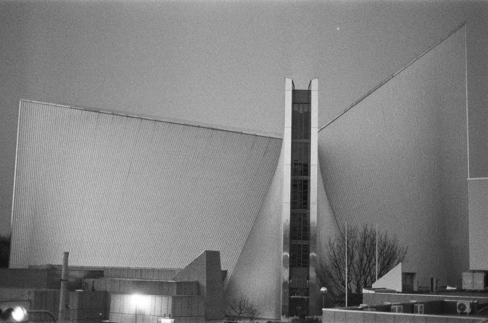
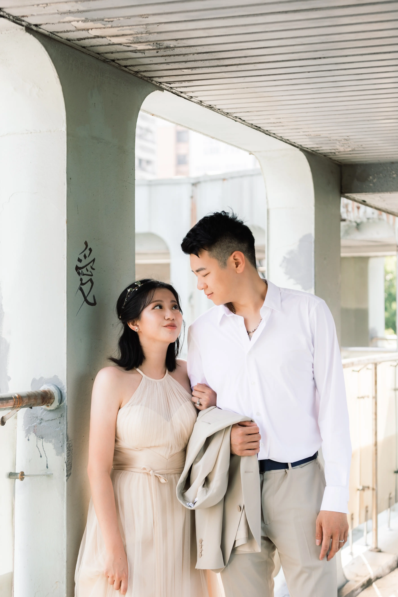
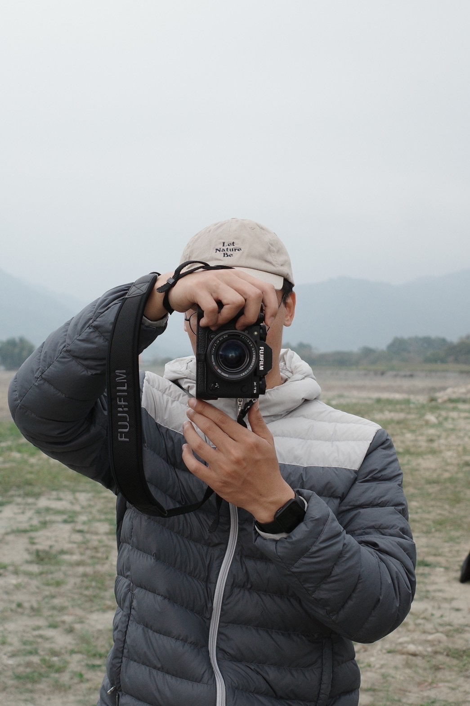

Landscape — 風景攝影

VIEW ALL
Nature & Architecture
Portrait — 人像攝影
VIEW ALL
Human & City
Wedding — 婚紗攝影

VIEW ALL
Eternal Moments

About
張立 CHANG LI
擁有建築背景的攝影者。
我專注於空間、秩序與光影在時間流動下的本質。
從建築實構築的嚴謹到消防救護的冷靜，這些經歷塑造了我對「過程」的深刻觀察。
我喜歡在觀景窗後尋找結構與感性的平衡。目前致力於捕捉風景的靜謐、人像的真實以及婚紗的溫潤瞬間。
Contact /
khoe870804@gmail.com